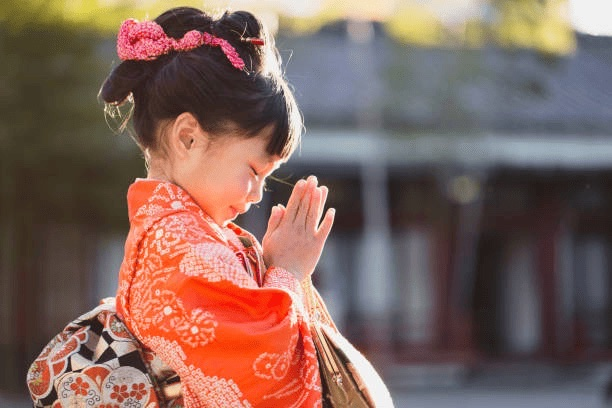
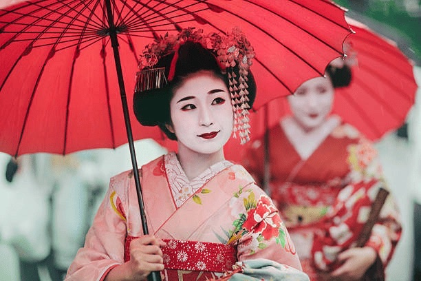
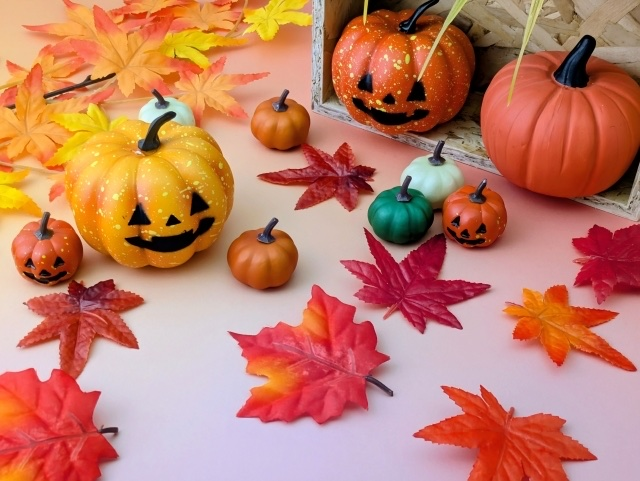
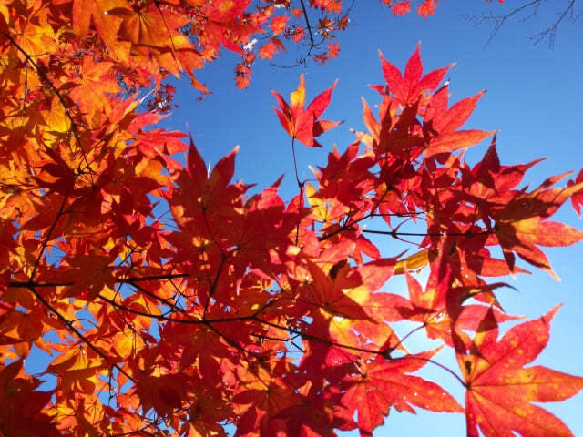
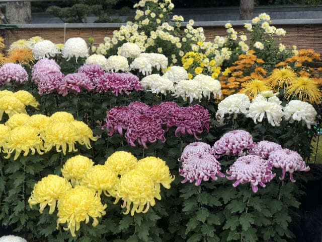
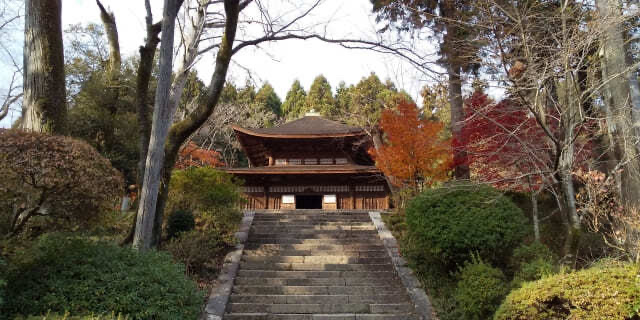
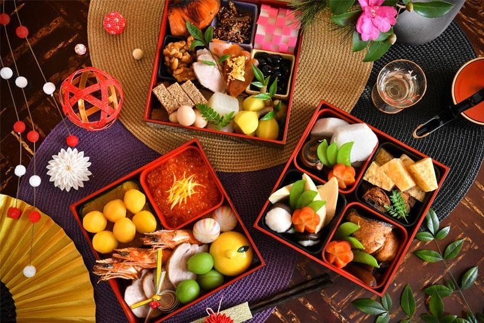
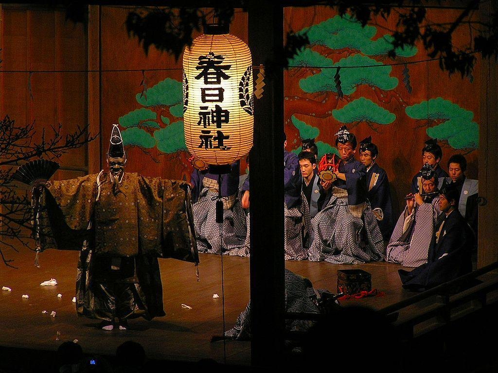

What Is Ōmisoka (大晦日)? Meaning, Traditions, and How Japanese Celebrate New Year’s Eve
Ōmisoka, or New Year’s Eve in Japan, falls on December 31st and marks one of the most spiritually significant days in the Japanese calendar.
Category
Matching articles: 12
Ōmisoka, or New Year’s Eve in Japan, falls on December 31st and marks one of the most spiritually significant days in the Japanese calendar.
A Celestial Shift Signifying Light, Renewal, and the Return of Balance
Tōji, known as the Winter Solstice in Japan, is more than just an astronomical event—it’s a symbolic and spiritual ...
Taisetsu is part of the 24 solar terms (二十四節気 / Nijūshi Sekki) used in the traditional East Asian lunisolar calendar. It comes after Shōsetsu (小雪 – Light Snow) and precedes Tōji (冬至 – Winter...

Shichi-Go-San is not a national holiday, but it’s widely observed across Japan. Rooted in Shinto tradition, it celebrates important milestones in a child’s life ...

Culture day, or Culture Day Japan, was established to promote the love of freedom, peace, and culture. It originated in 1948 to commemorate ...

Halloween wasn’t always widely celebrated in Japan. In fact, until the early 2000s, the holiday was relatively unknown to most people

Every year around September 22 or 23, Japan celebrates Autumnal Equinox Day, known in Japanese as 秋分の日 (Shūbun no Hi). It marks the precise moment ..

If you're lucky enough to be in Japan in early autumn, you might stumble upon something quietly magical — Chōyō no Sekku, or the Chrysanthemum Festival.
August 15 is the key date for End of War Memorial Day, and while events happen across Japan, Tokyo is the center of national observance.

Risshū (立秋) marks the traditional beginning of autumn in the Japanese seasonal calendar. Falling around August 7th or 8th each year, it is part

Risshū (立秋) marks the traditional beginning of autumn in the Japanese seasonal calendar. Falling around August 7th or 8th each year, it is part

Risshū (立秋) marks the traditional beginning of autumn in the Japanese seasonal calendar. Falling around August 7th or 8th each year, it is part